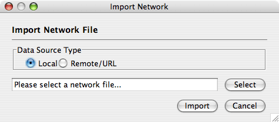
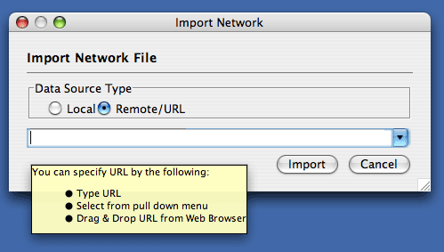
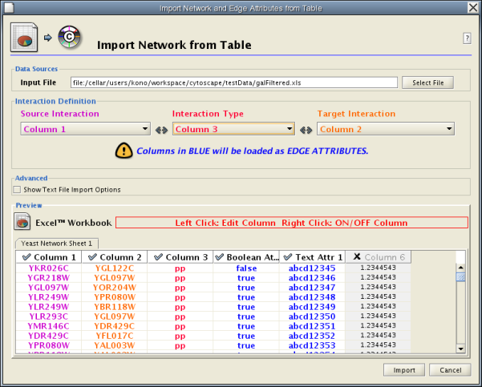
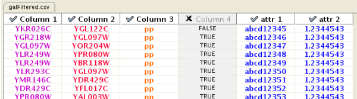
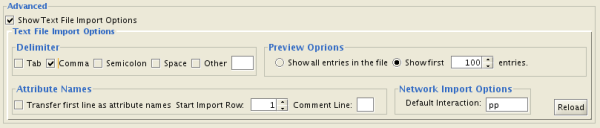
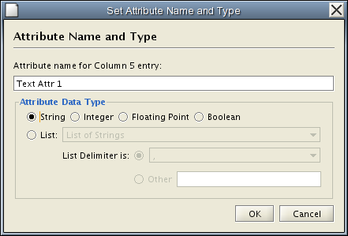

There are 3 different ways of creating networks in Cytoscape:
Network files can be specified in any of the formats described in the Supported Network Formats chapter. Networks are imported into Cytoscape through the "Import Network" window, which can be accessed by going to File → Import → Network (multiple file types). The network file can either be located directly on the local computer, or found on a remote computer (in which case it will be referenced with a URL).
By default, Cytoscape loads networks from the local computer.
The Import Networks dialog shows a default setting of "Data Source Type: Local," meaning that network files from the local computer will be available for importing. Choose the correct file by clicking on the Select button (only file types that Cytoscape recognizes will be shown), and then load the network by clicking on the Import button. Some sample network files of different types have been included in the sampleData folder in Cytoscape.
Network files in SIF, GML, and XGMML formats may also be loaded directly from the command line using the –N option.

The Import Networks dialog is also capable of importing network files using a URL. To do this, set the Data Source Type to Remote and insert the appropriate URL, either manually or using URL bookmarks. Bookmarked URLs can be accessed by clicking on the arrow to the right of the text field (see the Bookmark Manager in Preferences for more details on bookmarks). Also, you can drag and drop links from web browser to the URL text box. Once a URL has been specified, click on the Import button to load the network.

Importing networks from URL addresses has an important caveat. Because Cytoscape determines file type primarily (not exclusively) by file extension, it can have trouble importing networks with URLs that don't end in a human readable file name. If Cytoscape does not recognize a meaningful file name and extension in the URL, it will attempt to guess the type of file based on MIME type. If the MIME type is not recognizable to any of our import handlers, then the import will fail.
Another issue for network import is the presence of firewalls, which can affect which files are accessible to a computer. To work around this problem, Cytoscape supports the use of proxy servers. To configure the proxy server, go to Edit → Preferences→ Proxy Server... . This is further described in the Preferences chapter.
Introduced in version 2.4, Cytoscape now supports the import of networks from delimited text files and Excel workbooks using Edit → Import → Network from Table (Text/MS Excel)... . An interactive GUI allows users to specify parsing options for specified files. The screen provides a preview that shows how the file will be parsed given the current configuration. As the configuration changes, the preview updates automatically. In addition to specifying how the file will be parsed, the user must also choose the columns that represent the Source nodes, the Target nodes, and an optional edge interaction type.

The "Import Network from Table" function supports delimited text files and single-sheet Microsoft Excel Workbooks. The following is a sample table file:
source target interaction boolean attribute string attribute floating point attribute YJR022W YNR053C pp TRUE abcd12371 1.2344543 YER116C YDL013W pp TRUE abcd12372 1.2344543 YNL307C YAL038W pp FALSE abcd12373 1.2344543 YNL216W YCR012W pd TRUE abcd12374 1.2344543 YNL216W YGR254W pd TRUE abcd12375 1.2344543
The network table files should contain at least two columns: source nodes and target nodes. The interaction type is optional in this format. Therefore, a minimal network table looks like the following:
YJR022W YNR053C YER116C YDL013W YNL307C YAL038W YNL216W YCR012W YNL216W YGR254W
One row in a network table file represents an edge and its edge attributes. This means that a network file is considered a combination of network data and edge attributes. A table may contain columns that aren't meant to be edge attributes. In this case, you can choose not to import those columns by clicking on the column header in the preview window. This function is useful when importing a data table like the following (1):
Unique ID A Unique ID B Alternative ID A Alternative ID B Aliases A Aliases B Interaction detection methods First author surnames Pubmed IDs species A species B Interactor types Source database Interaction ID Interaction labels Cross-references Associated Files Experiment files Experiment labels Different techniques Different Pubmed articles Different sources Weight 7205 5747 TRIP6 PTK2 Q15654 Q05397-1 vv|HPRD Currently not available 14688263|15892868(Marcotte) Mammalia Homo sapiens protein|protein HPRD|Marcotte 0 Thyroid hormone receptor interactor 6-FAK-|PTK2-TRIP6 NA(HPRD)|NA(Marcotte) HPRD/02859_psimi.xml|other/ORIGINAL_DATA_MARCOTTE.txt vv(HPRD/02859_psimi.xml)|HPRD(other/ORIGINAL_DATA_MARCOTTE.txt) 17651(ExptRef)|Marcotte 2 2 2 2 4174 7311 MCM5 UBA52 P33992 P62987 neighbouring_reaction Currently not available 15608231(Reactome) Homo sapiens Homo sapiens protein|protein Reactome 1 P33992-P62988 Reaction:68944<->Reaction:68946(Reactome)|Reaction:68946<->Reaction:68944(Reactome) other/ORIGINAL_DATA_MARCOTTE.txt neighbouring_reaction(other/REACTOMEhomo_sapiens.interactions.txt) Reactome 1 1 1 1 7040 7040 TGFB1 TGFB1 P01137 P01137 nmr: nuclear magnetic resonance Currently not available 8679613 Homo sapiens Homo sapiens protein|protein BIND 2 TGFB1-TGFB1- 72085(BIND) BIND/bind_taxid9606.1.psi.xml nmr: nuclear magnetic resonance(BIND/bind_taxid9606.1.psi.xml) NotAvailable 1 1 1 1
This data file is a tab-delimited text and contains network data (interactions), edge attributes, and node attributes. To import network and edge attributes from this table, you need to choose Unique ID A as source, Unique ID B as target, and Interactor types as interaction type. Then you need to turn off columns used for node attributes (Alternative ID A, species B, etc.). Other columns can be imported as edge attributes.
The network import function cannot import node attributes - only edge attributes. To import node attributes from this table, please see the Attributes section of this manual.
Note (1): This data is taken from the A merged human interactome datasets by Andrew Garrow, Yeyejide Adeleye and Guy Warner (Unilever, Safety and Environmental Assurance Center, 12 October 2006). Actual data files are available at http://www.cytoscape.orghttp://cytoscape.org/cgi-bin/moin.cgi/Data_Sets/
To import network text/Excel tables, please follow these steps:
Select File → Import → Network from Table (Text/MS Excel)...
Enable/Disable Attribute Column - By left-clicking on a column header in the preview table, you can enable/disable edge attributes. If the header is checked and entries are blue, the column will be imported as an edge attribute. For example, the table below shows that columns 1 through 3 will be used as network data, column 4 will not be imported, and columns 5 and 6 will be imported as edge attributes.

Change Attribute Name and Data Types - If you right-click on a column header in the preview table, you can modify the attribute name and data type. For more detail, see "Modify Attribute Name/Type" below.

You can select several options by checking the Show Text File Import Options checkbox.

Attribute names and data types can be modified here.
Cytoscape has a basic data type detection function that automatically suggests the attribute data type of a column according to its entries. This can be overridden by selecting the appropriate data type from the radio buttons provided. For lists, a global delimiter must be specified (i.e., all cells in the table must use the same delimiter).
A new, empty network can also be created and nodes and edges manually added. To create an empty network, go to File → New → Network → Empty Network, and then manually add network components using the Editor in CytoPanel 1 (see the Editor chapter for more details).